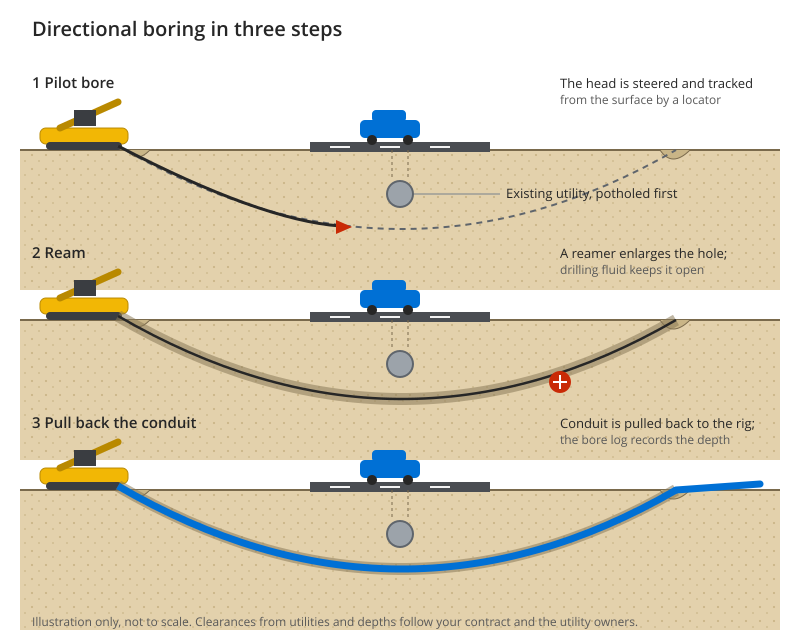

Trenching vs. directional boring
In one sentence: trenching is open and predictable; boring avoids cutting pavement and traffic but hides what is underground.
Trenching

An open trench is cut, conduit is laid on bedding, and the trench is backfilled and the surface restored.
- Best for: shoulders, unpaved areas, short runs, many conduits together.
- Watch: traffic control, pavement restoration, compaction, and keeping the trench safe and short.
Horizontal directional drilling (boring)

A drill steers a pilot bore underground, then pulls the conduit back through it.
- Best for: crossing roadways, ramps, driveways, waterways or landscaped areas without opening them.
- Watch: utilities you can't see, the depth of the bore, frac-outs (drilling fluid surfacing), and a bore log to record the actual path.
Choosing
The plans or specifications sometimes require one method for a location. Otherwise, choose on cost, traffic impact and risk. Boring is often done by a specialty subcontractor.
PM notes
- Pothole the utilities the bore will cross before drilling.
- Keep the bore logs: they become the as-built depth record.
- If a utility conflict forces a new route, write an RFI before changing it. See Writing RFIs.
Common mistakes / what Caltrans actually checks
- Boring without potholing the utilities it crosses.
- No bore log, so the as-built depth is unknown.
- Pavement restoration not to specification after trenching.